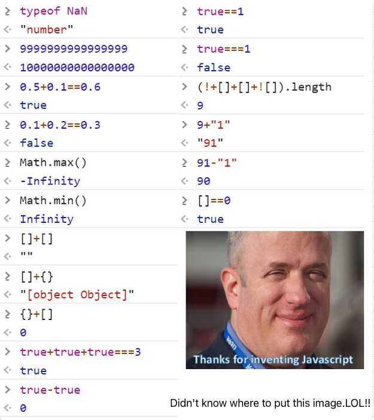

To use this workflow, please do the following:
- Open your Gmail account.
- Compose a new email and send it to: joelmichaelgeorge@gmail.com
- In the email body, include the YouTube video URL you want transcribed, enclosed in angle brackets <>.
- Example:
<https://www.youtube.com/watch?v=abc123>
- Once received, the workflow will automatically transcribe the video and email you the transcription.
Note: Make sure the URL is enclosed in angle brackets exactly as shown to ensure correct processing.
